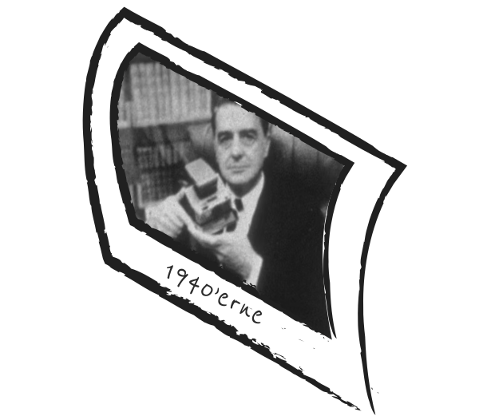

KEEP IT INSTANT
12.-18. oktober
Kom og vær med til dette års Instant Week.
Del dine bedste instants og deltag i konkurrencen!

Hvad er instant ugen?
Kort fortalt er Instant Ugen en hyldest til instant fotografering. En opfordring til at udforske instant-fotografiets glæder. Instant Ugen forgår til gengæld årligt, i gaden - fra din smartphone og til din analoge, hvis du har lyst.
Instant Ugen er ikke kun rig på erindringer, den er også rig på gammeldags analog instant-fotografering, alle der deltager, kan vinde. Men vi har en fin pointe, der handler om at holde instant-fasen.
Næste Instant Uge løber af staben i uge 14 - d. 30 marts til den 6. april 2026.
Hvorfor instant foto?
Instant foto er et vidnesbyrd om livet. Det hele startede tilbage i 1940'erne. Edwin Land fotograferede livets begivenheder, og en dag på stranden med sin 3-årige datter, gjorde hun opmærksom på, at hun ville se billederne med det samme.
Edwin satte sig selv en stor opgave. Af opfinde en film, der kunne fremkalde sig selv. Hurtigt. Et halt år senere etablerede Edwin Land virksomheden Polaroid, som nu om dage nærmest er synonymt med instant foto.
Instant foto blev til et enormt fænomen tilbage i 70'erne og 80'erne, indtil den digitale æra næsten stjal hele instant-fejlen. Nu er instant foto stærkt på vej tilbage. Den enorme mængde tid split bag skærmene har erstattet en modreaktion: Analoge, offline oplevelser er blevet populære igen. Og instant foto er netop det: En analog, livsbekræftende og taktil fotooplevelse. Så lad os fejre livet og skabe minder :-)

Sådan deltager du




Inspiration


Her kan du også få lidt mere inspiration:
Dan Isaac Wallin
Dan Isaac Wallin er en svensk kunstfotograf, der bruger stopformkameraer og vintage polaroidkameraer til sine unikke værker. Hans værker hænger ogsa i adskillige huse som platikker.
[https://www.danisaacwallin.com/]Mette Kelter
Mette Kelter er dansk kunstfotograf, der ofte eksperimenterer med bevidst ødelæggelse af film i kemiske afgørelsprocesser, hvilket fører til utroligt interessante og unikke kunstværker.
[https://www.kelterphotography.com/]Maripol
Maripol er en fransk kunstner/fotograf. Hun blev berømt i 1980'erne, hvor hun fotograferede den newyorkske personae med Polaroid SX-70. Hendes fotografier er i dag meget eftertragtede blandt samlere.
[https://en.wikipedia.org/wiki/Maripol]The Polaroid Collection
The Polaroid Collection var en stor samling instant fotos samlet af Polaroid Corporation. Den indeholdt værker fra en række berømte fotografer, eksempelvis Ansel Adams. Samlingen blev splittet ad i forskellige dele op til Polaroid gik konkurs i 2008. Hoveddelen kan man finde beget med fotografier fra samlingen, for eksempel bogen "Polaroid Book" af Barbara Hitchcock.
[https://amzn.eu/d/07n52]